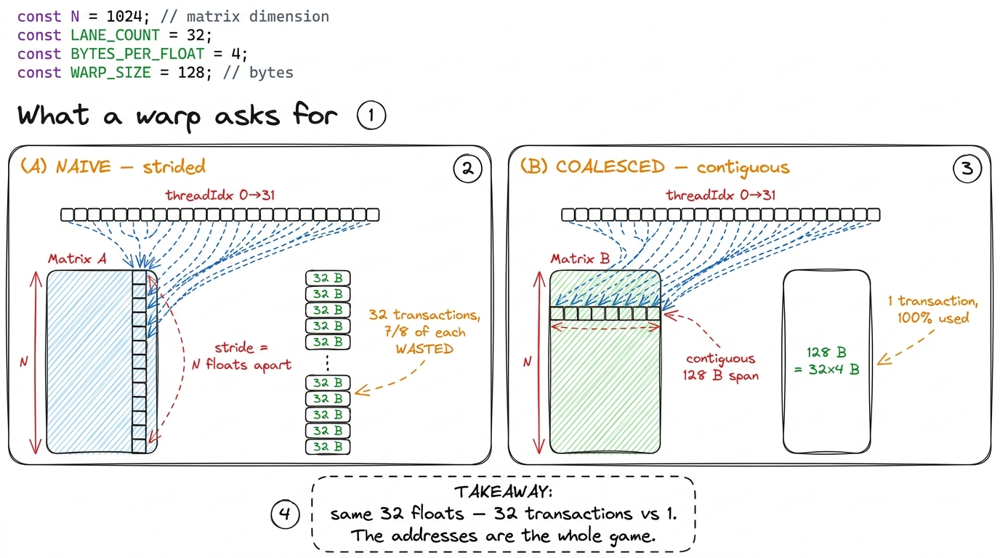
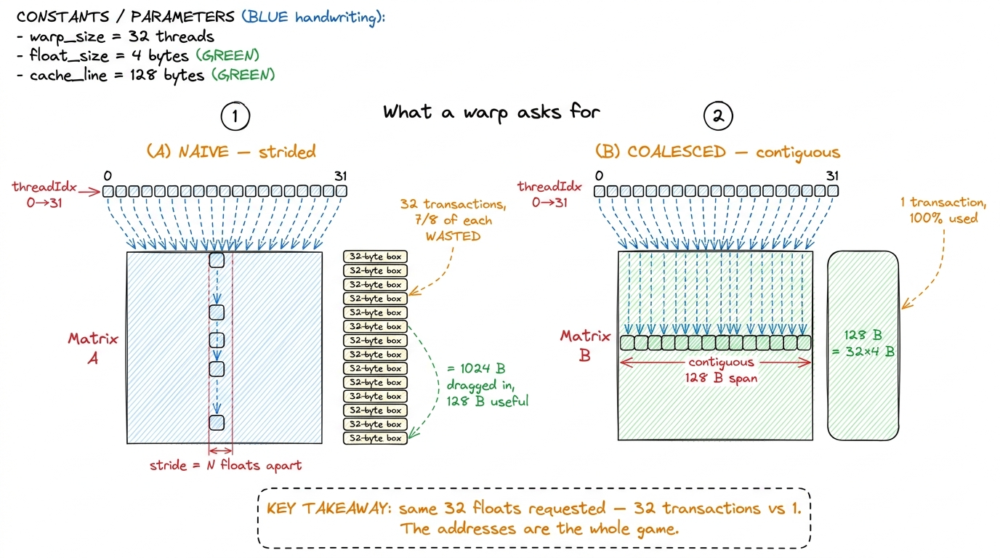
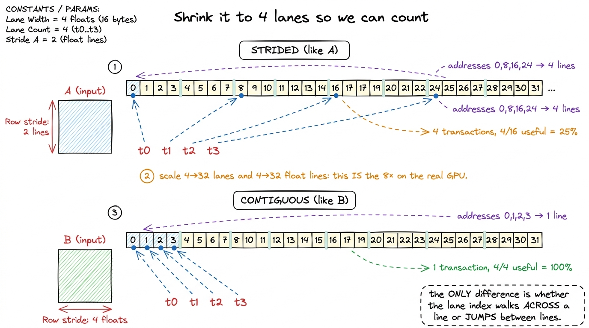
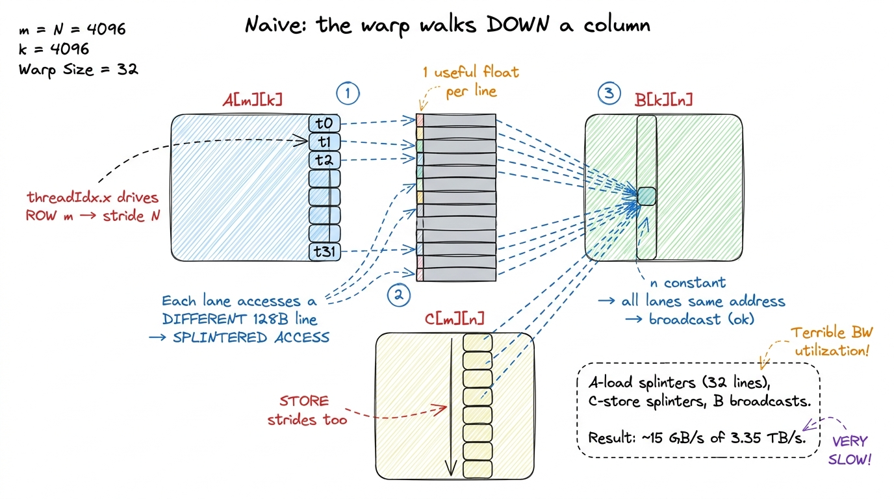
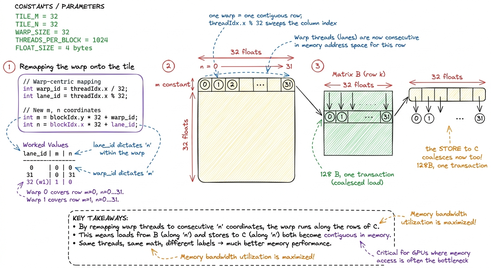
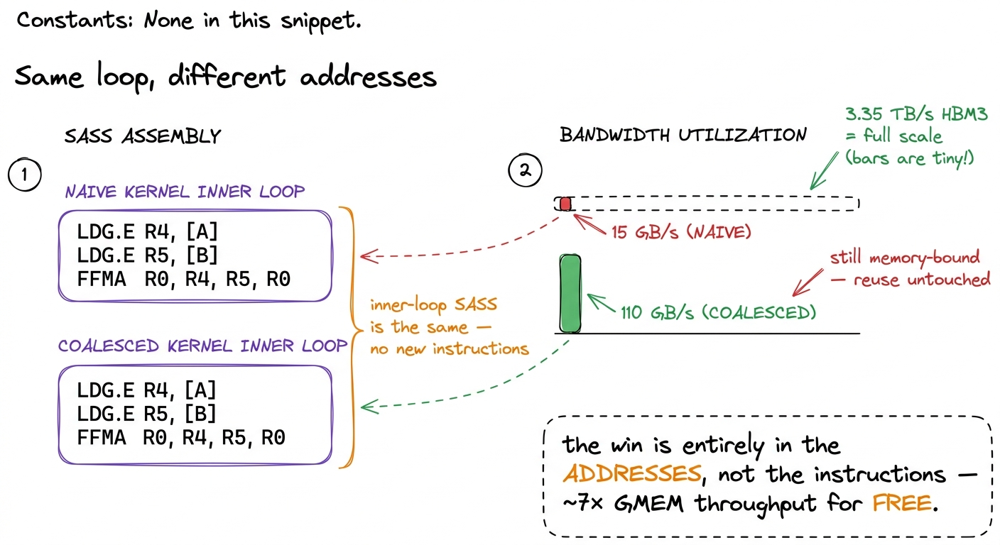
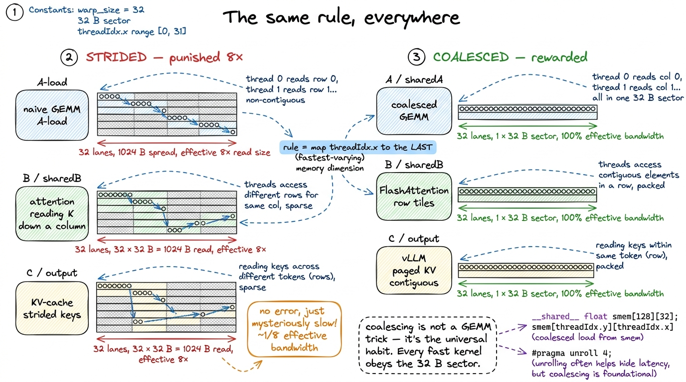

Kernel 2: Global memory coalescing 8.5%
Kernel 1 left us with a profile and a promise. The profile said we were drowning in global-memory traffic at 1.3% of cuBLAS. The promise was that the very next kernel would roughly quadruple that number with a single line change — no shared memory, no tiling, no new algorithm, not one extra floating-point operation. This is that kernel. It is my favorite one on the whole ladder, because the payoff-to-effort ratio is almost embarrassing, and because the change looks, the first time you see it, like it does nothing at all.
So let me state the question this article answers as plainly as I can, because if you leave with only one idea, it should be this one:
Why does the order in which 32 threads ask for memory change how fast that memory arrives — when the total number of bytes is exactly the same?
That sentence sounds like it shouldn't be true. If two kernels read the identical set of floats out of the identical DRAM, how can one be eight times slower at reading them? Bytes are bytes. The naive kernel doesn't read more data than the coalesced one — it reads the same data, in a different order, and pays a 6–8× tax for the ordering. To understand why, we have to stop imagining a load as "one thread grabs one number" and start looking at what the hardware physically does when a whole warp asks for memory in the same instant. Once you see that, the fix is obvious and the speedup is inevitable.
Everything here inherits from kernel 1: one thread per output element, FP32, square N × N matrices, 32 × 32 thread blocks. The math is byte-for-byte identical. All we change is which output element each thread computes — a relabeling of threads onto data. That relabeling is the entire optimization, and understanding why it works is understanding the single most important access-pattern rule on the whole GPU.
First, let's be precise about which memory problem we're fixing
From the three regimes we already know kernel 1 is memory-bound — it does about one flop per float it loads, hundreds of times below the roofline ridge. So the win has to be a memory win; there's no point chasing flops when the compute units are sitting idle waiting for data. But "memory problem" is too vague. There are two completely different memory problems tangled together in the naive kernel, and I want to separate them cleanly, because we fix exactly one of them here and leave the other one wide open on purpose.
The first problem is reuse. Every thread re-reads a full row of A and a full column of B straight from HBM. Across the whole launch we fetch O(N³) floats to do O(N³) flops, even though the actual data is only O(N²) — each element gets pulled from DRAM N separate times. That is the biggest problem, and we do not fix it in this kernel. Fixing reuse needs on-chip staging: read a tile once, share it among many threads. That is shared memory, kernel 3.
The second problem is coalescing. Forget for a moment that we read too many bytes. For the bytes we do read, are we using each memory transaction fully — or are we throwing most of it away? That is what we attack here, and it is a narrow, testable hypothesis:
The naive kernel issues far more global-memory transactions than it needs to, each one mostly empty. Simply rearranging which thread handles which output element will pack those transactions full — same bytes, same flops, same instructions, more throughput.

figure rendering · The naive kernel has two separate memory bugs. Reuse (we read each floTo see why coalescing even exists as a problem, we need exactly one fact about how the hardware reads memory. Let me build it from nothing.
What a warp actually does when it loads
Threads do not execute alone, and they do not execute one at a time. When you launch a CUDA kernel you get thousands of threads, and the Streaming Multiprocessor (SM) that runs them bundles them into groups of exactly 32 called a warp. The 32 threads of a warp march in lockstep: at each step they all execute the same instruction at the same clock. When that instruction is a global load, all 32 lanes issue their load together, in the same cycle.
That simultaneity is the whole story. The memory system does not receive 32 requests one after another, each of which it can mull over separately. It receives 32 addresses at once, and it has to decide how to service them as a single batch.1 This is the detail almost everyone gets wrong the first time. A warp is formed by flattening (x, y, z) with threadIdx.x moving fastest — NOT by threadIdx.y. In a 32×32 block, one warp is a full row of constant threadIdx.y spanning threadIdx.x = 0..31. Get this backwards and your entire coalescing analysis inverts, because you'll be reasoning about the wrong 32 addresses. See threads, warps, blocks, grids.
Now the fact that reorganizes everything: the GPU does not fetch one float at a time. It physically cannot. Global memory (HBM) and the L2 cache in front of it are organized into fixed-size chunks. The GPU moves memory in sectors of 32 bytes, and a full cache line is 128 bytes — four sectors.2 On Hopper the L2 line is 128 B, split into four 32 B sectors; the memory controller tracks residency and moves data at sector granularity, so a transaction that touches even one byte of a sector pays for the whole 32 B. The naive kernel's tragedy is that it touches exactly 4 useful bytes out of every 32 B sector it drags in. And 128 bytes is exactly 32 FP32 floats (32 × 4 B). That is not a coincidence you should skip past. Thirty-two floats per line, thirty-two threads per warp — the number matches on purpose, and it is the hinge the entire design turns on.
Here is the rule that decides everything, and it is worth reading twice:
- If the 32 lanes of a warp request 32 consecutive, aligned 4-byte floats — one contiguous 128-byte span — the hardware fuses all 32 requests into a single 128-byte transaction, and every byte it moves is a byte some thread actually asked for. This fusion is global memory coalescing. One trip, 100% useful.
- If instead the 32 lanes request 32 floats scattered
Napart, the hardware cannot fuse anything. It issues a separate 32-byte sector transaction per lane, and each of those sectors hauls in 32 bytes to satisfy a single 4-byte request. You use one float out of eight. Seven-eighths of your precious HBM bandwidth is spent hauling bytes you immediately discard.

figure rendering · A warp's 32 lanes either fuse into one 128-byte transaction or splinteLet me do that napkin math out loud, because the ratio is the point. In the strided case the warp wants 32 floats = 128 useful bytes. But it drags in 32 sectors × 32 bytes = 1024 bytes to get them. Useful fraction: 128 / 1024 = 1/8 = 12.5%. In the coalesced case the warp wants the same 128 useful bytes and drags in exactly 128 bytes: 100%. Same data, same flops, and the hardware moved 8× more bytes in the bad case to deliver the identical result. That 8× is not a tuning knob or a compiler mood — it falls straight out of a fixed hardware granularity: sectors are 32 bytes, floats are 4 bytes, so a splintered access wastes a factor of 8 by definition.
Notice what this panel does not depend on. It says nothing about how much math each thread does, or how many times we re-read a value. Two kernels can load the exact same set of floats and differ by 8× in effective bandwidth purely from the order the lanes ask for them. That is the lever we're about to pull.
A tiny by-hand trace, so the numbers aren't magic
Let me shrink everything to a size I can draw, so the abstract rule becomes concrete. Pretend a warp is just 4 lanes and a "line" is 4 floats (16 bytes). Say lanes 0,1,2,3 want A[0][k], A[1][k], A[2][k], A[3][k] with N = 8, so the addresses are floats 0, 8, 16, 24. Those four are in four different 4-float lines: line {0,1,2,3}, line {8,9,10,11}, line {16..19}, line {24..27}. Four lines fetched, one useful float in each — 4 transactions, 4/16 = 25% useful.
Now flip it: lanes 0,1,2,3 want B[k][0], B[k][1], B[k][2], B[k][3] — addresses 0, 1, 2, 3. All four sit in the same line {0,1,2,3}. One transaction, 4/4 = 100% useful. Four times fewer transactions for the identical four floats.
Scale that toy back up — 4 lanes → 32 lanes, 4-float line → 32-float (128 B) line — and you get exactly the 8× from the previous section. Nothing changed but the labels. That is the entire mechanism; the rest of this article is just wiring it into the kernel.

figure rendering · The whole rule in miniature: four lanes reading contiguous floats hitThe naive mapping points the warp the wrong way
Now let's find the bug in kernel 1. Recall how it assigned threads to output elements:
const uint m = blockIdx.x * blockDim.x + threadIdx.x; // row
const uint n = blockIdx.y * blockDim.y + threadIdx.y; // colThe subtle thing — and the thing that puzzled me the first time — is which 32 threads land in the same warp. A warp is 32 threads with consecutive linear indices, and for a 2D block CUDA computes that linear index as threadIdx.y * blockDim.x + threadIdx.x, with threadIdx.x moving fastest. With a 32 × 32 block, that means a single warp is a set of 32 threads that share one threadIdx.y and sweep across all 32 values of threadIdx.x. In plain words: within a warp, threadIdx.x varies 0→31 and threadIdx.y is fixed.
Here is the trap. The naive kernel wires threadIdx.x to the row m. So the fast-varying lane index — the one that sweeps 0→31 across the warp — runs down a column of memory. That is exactly the wrong direction, and now we can prove it costs 8× by tracing the two loads inside the inner k loop, A[m*N + k] and B[k*N + n]:
A[m*N + k]— across the warp,m = ... + threadIdx.xvaries by 1 whilekis identical for all lanes at a given loop step. So the 32 lanes requestA[m][k], A[m+1][k], A[m+2][k], …— addressesNfloats apart, marching straight down a column. Different line every lane. The hardware cannot fuse them; it splinters into 32 near-empty sector transactions. This is the bandwidth killer.B[k*N + n]— across the warp,n = ... + threadIdx.yis constant (samethreadIdx.yfor the whole warp) andkis the same for all lanes, so all 32 lanes request the same address inB.3 A same-address broadcast isn't wasteful in the sector sense — the hardware fetches one sector and broadcasts that one value to all lanes — soBis not where the naive kernel bleeds bandwidth. The damage is entirely on the stridedAload and the equally strided store toC[m*N + n], both of which march down a column with strideNasthreadIdx.xsweeps the warp.
So the naive kernel isn't randomly bad — it's bad in one specific, diagnosable place: the A load and the C store both stride by N because the warp is pointed down a column. The upshot, confirmed by the profiler, is a pitiful ~15 GB/s of global-memory throughput — a rounding error against the H100's 3.35 TB/s of HBM3.4 The concrete GFLOP/s figures in this article come from Simon Boehm's A6000 measurements (768 GB/s, ~30 TFLOP/s FP32), while the bandwidth-cliff framing uses the H100's 3.35 TB/s. The ratio — how empty each transaction is — is a hardware-granularity fact and transfers across both cards essentially unchanged. The lanes are simply pointed the wrong way relative to how DRAM wants to be read.

figure rendering · In the naive mapping the fast lane index drives the row, so the warp wThe one-line remap
Here is the whole change. Instead of pulling m and n from the 2D threadIdx.y / threadIdx.x, we flatten the block to a 1D index and split it ourselves, so the fast-varying direction of the warp runs along the output column instead of down the row:
const int m = blockIdx.y * BLOCKSIZE + (threadIdx.x / BLOCKSIZE); // row
const int n = blockIdx.x * BLOCKSIZE + (threadIdx.x % BLOCKSIZE); // colThat is it. BLOCKSIZE is 32, and we now launch a 1D block of 32 * 32 = 1024 threads. Read the two lines slowly, because this is the part that trips people up (it tripped me up). We have swapped which arithmetic feeds the column. The column n now comes from threadIdx.x % BLOCKSIZE, and % is exactly the operation that cycles fastest as threadIdx.x increments by 1. So within a warp — 32 consecutive threadIdx.x from, say, 0 to 31 — the row m (threadIdx.x / 32) stays constant, and the column n (threadIdx.x % 32) sweeps 0, 1, 2, …, 31.
Let me sanity-check that with the divide and mod for lanes 0 through 33, because seeing the pattern kills any lingering doubt. Lane 0: 0/32 = 0, 0%32 = 0 → (m=0, n=0). Lane 1: 1/32 = 0, 1%32 = 1 → (0, 1). … Lane 31: 31/32 = 0, 31%32 = 31 → (0, 31). Lane 32: 32/32 = 1, 32%32 = 0 → (1, 0). Lane 33 → (1, 1). So the first warp (lanes 0–31) is a single contiguous row of the output tile, n walking 0→31 with m pinned at 0. The next warp is the next row. Exactly the layout the memory system wants.

figure rendering · The remap lays each warp along a contiguous output row, so the fast-vaThe effect chains through all three arrays, and it is the exact mirror image of the naive kernel:
A[m*N + k]— the strided, splintered access that was killing us — becomes a genuine broadcast. Every lane in the warp now shares rowm(constant across the warp), so all 32 want one address, served from a single sector.B[k*N + n]— which used to be the free broadcast — now hasnsweeping across the warp, so the 32 lanes read 32 adjacent floats: one full 128-byte transaction, 100% useful.C[m*N + n]— the store — now writes 32 adjacent elements per warp, coalesced where it used to stride.
Every global access the warp issues is now either one full 128-byte transaction or one broadcast. Nothing splinters.
I want to stress how little happened here, so it truly lands. We did not add a byte of shared memory. We did not change the arithmetic intensity — still one flop per float loaded. We still re-read A and B from HBM N times over; the reuse problem is completely untouched. We only changed the addresses each warp presents to the memory system on the same loads it was already doing.5 You can get the identical coalesced layout by keeping a 2D block and just reading threadIdx.y as the column and threadIdx.x as the row — the "swap x and y" trick that Simon Boehm's post uses. The explicit / and % on a 1D block make the warp-to-address mapping impossible to misread, which is why I prefer it in a teaching kernel. Both compile to the same coalesced pattern.
The measurement
Point Nsight Compute at the coalesced kernel and the story is exactly the one we predicted from the granularity rule — no surprises, which is itself the sign we understood the mechanism. Global-memory throughput jumps from ~15 GB/s to ~110 GB/s. The transactions are now full instead of one-eighth full, and the DRAM controller is finally being fed something worth its time. The memory-workload analysis still flags us as memory-bound — of course it does, we never touched reuse — but for each transaction we issue, we're now moving useful bytes roughly 7× more efficiently.
Throughput on the benchmark rises from the naive kernel's ~309 GFLOP/s to ~1986.5 GFLOP/s — from 1.3% to 8.5% of cuBLAS.6 Those are Simon Boehm's exact A6000 figures: 309.0 → 1986.5 GFLOP/s. The precise numbers shift with the card, but the ~6.4× jump from coalescing alone is remarkably stable across GPUs, because it comes from a fixed hardware granularity rule (32 B sectors) rather than from any tuning that a particular chip might reward differently. A 6.4× speedup from relabeling threads — no new memory, no new instructions, no new algorithm.
Now, why 6.4× and not the clean 8× the transaction math predicted? A fair question, and the gap is honest. The naive kernel wasn't 100% strided: its B load was already a free broadcast, so only two of its three global accesses (A load, C store) were paying the full splinter tax. The L2 cache also rescues some of the strided traffic — neighboring warps' wasted sectors sometimes overlap and get served from L2 rather than HBM, softening the theoretical cliff. So the measured end-to-end speedup lands a bit under the per-transaction 8×, which is exactly what you'd expect once you account for the broadcast and the cache. The mechanism is real; the caveats just keep us honest.

figure rendering · The inner-loop instructions are byte-for-byte identical across both keThe SASS for the loop body is essentially identical to kernel 1 — same three instructions, two loads and a fused multiply-add. Only the address arithmetic outside the loop changed. That is the entire lesson in one sentence: the naive kernel was leaving 7/8 of its bandwidth on the floor, and the hardware handed it back the instant the warp faced the right direction.
Why this is the habit, not just a trick
It would be easy to file coalescing away as a cute one-off for GEMM. It is not. It is the single most important access-pattern rule on the GPU, and it shows up in essentially every kernel you will ever write or read.
Think about what "contiguous across the warp" really demands: it wants your innermost, fastest-varying loop index to map to the fastest-varying memory dimension. In C-style row-major storage, that's the last index. So the universal coalescing rule is: make threadIdx.x index the last dimension of whatever array you're streaming. Get that one alignment right and the memory system rewards you 8×; get it backwards and it punishes you 8×, silently, with no error and no warning — just a mysterious throughput number that's a fraction of what the card can do.
This is exactly why production kernels obsess over memory layout. FlashAttention tiles Q, K and V so that each warp streams contiguous rows into shared memory. vLLM's paged KV-cache lays out its blocks so the decode kernel's warps read contiguous keys and values, not strided ones. DeepSeek's DeepGEMM and every serious FP8 matmul choose their tile shapes and swizzles first and foremost to keep the global loads coalesced. None of these are doing anything more exotic than what we just did — they're all obeying the same 32-byte-sector rule, at a larger scale, on fancier data types.

figure rendering · The coalescing rule generalizes far past GEMM. FlashAttention, vLLM'sWhat the profiler tells us to do next
We are still memory-bound, and the profiler is blunt about why: 110 GB/s is still ~30× short of the 3.35 TB/s the HBM3 can deliver — and even that is the wrong number to chase. Because the deeper problem is no longer how we go to HBM; it's that we go to HBM at all for data we already read. Coalescing made each trip efficient. It did nothing about the fact that we take O(N³) trips. Element A[m][k] is still fetched by every one of the 32 threads that share row m's tile, N times over the course of the launch. We fixed the shape of each transaction; we never questioned the count.
So the regime playbook points at the same lever it always does once you're memory-bound and out of easy access-pattern wins: stop going to HBM. Stage a tile of A and a tile of B into on-chip shared memory once, then let a whole block of threads reuse them from there — turning N global reads of each element into a single one. The H100 gives us up to 228 KiB of SMEM per SM to spend on exactly this,7 The 228 KiB is the maximum opt-in shared-memory partition per SM on Hopper; you have to request it explicitly via cudaFuncSetAttribute, and the L1 cache shares the same physical 256 KiB pool, so more SMEM means less L1. Not every kernel wants the maximum. More in shared memory & L1. and that is where the real climb begins.
That is kernel 3, and it takes us from 8.5% to 12.8% of cuBLAS — the first kernel where we finally attack reuse instead of access pattern, and the first taste of the on-chip data-staging discipline that carries the rest of the ladder all the way to 93.7%.
Before we go, hold onto the shape of what just happened, because the whole ladder rhymes with it. We formed a hypothesis from a measurement (memory-bound, strided A). We reasoned about what the hardware physically does (32 lanes, 32-byte sectors, 128-byte lines). We made the smallest possible change (relabel threads). We profiled to confirm the mechanism (15 → 110 GB/s). And the number moved exactly as much as the physics said it would. That loop — hypothesis, code, profile, bold number, bridge — is kernel engineering. Coalescing was just the gentlest, highest-leverage first turn of it.